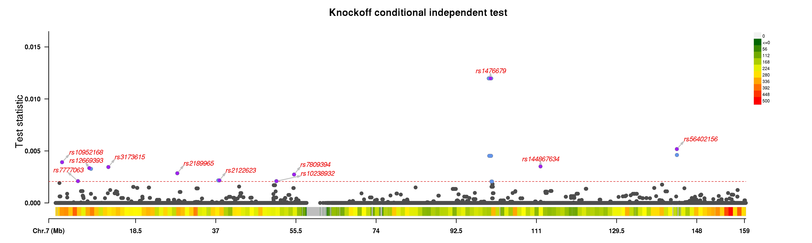
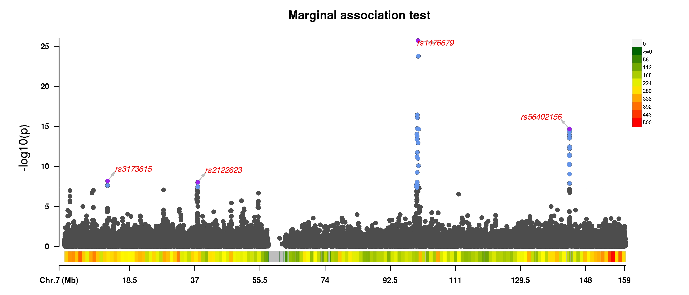

Detailed Example
This page collect examples of running the ghost knockoff pipeline. We will cover topics such as installation, examining input data, running the software, and interpreting the output.
Step 1: Download pre-processed LD files and binary executable
Proceed to the Downloads page and download (1) the software as well as (2) a pre-processed knockoff dataset suitable for your analysis, e.g.
wget https://github.com/biona001/GhostKnockoffGWAS/releases/download/v0.1.2/app_linux_x86.tar.gz
wget https://zenodo.org/records/10433663/files/EUR.zipNext, unzip the files in linux command line via:
tar -xvzf app_linux_x86.tar.gz
unzip EUR.zip # decompresses to ~8.7GBThis should create 2 folders app_linux_x86/ and EUR/ in the current directory. The executable is located inside app_linux_x86/bin/GhostKnockoffGWAS. We recommend adding the folder containing the GhostKnockoffGWAS executable to PATH for easier access.
Do NOT modify the contents in unzipped folders!
Step 2: Prepare a valid Z score file
One needs a valid Z score file as input.
If you would like to follow along with this tutorial, feel free to download this test data example_zfile.txt (17MB). The first few rows is
CHR POS REF ALT Z
7 27916 T C 1.82946485242
7 30580 C T 0.877343668618
7 30581 A T 0.876791309991
7 31273 G C -0.567289962351949
7 31439 T A -0.907002943915131
7 31627 A C 0.577058407641
7 32858 C T 1.80586134742
7 33482 T G 0.47877317796
7 34215 T C -0.711135940901- The first row is a header row which includes
CHR,POS,REF,ALT,Z. Other columns will be ignored. - Each row is a different SNP and each column is separated by a tab (i.e.
\tcharacter) or a comma
In this example
- The
POSfield corresponds to hg38 positions. GhostKnockoffGWAS requires the position to be either hg19 or hg38. - The sample size used for generating this data is
506200. Thus one should specify--N 506200.
Step 3: Running the analysis
To see a list of available arguments, execute GhostKnockoffGWAS --help.
To run the example analysis, run the following in the terminal
GhostKnockoffGWAS --zfile example_zfile.txt --LD-files EUR --N 506200 --genome-build 38 --out example_outputHere is the expected output:
Welcome to GhostKnockoffGWAS analysis!
You have specified the following options:
zfile = /scratch/users/bbchu/GhostKnockoffGWAS/data/example_zfile.txt
LD_files = /scratch/users/bbchu/GhostKnockoffGWAS/data/EUR
N (sample size) = 506200
hg_build = 38
outdir = /scratch/users/bbchu/GhostKnockoffGWAS/data/
outfile = /scratch/users/bbchu/GhostKnockoffGWAS/data/example_output
seed = 2023
verbose = true
random_shuffle = true
skip_shrinkage_check = false
count_matchable_snps processed chr 7, cumulative SNPs = 35855
region 1 / 99 (f = LD_start100196651_end101199252.h5): chr 7, nz beta = 9, nsnps = 306, shrinkage = 0.1909
region 2 / 99 (f = LD_start101199253_end103197509.h5): chr 7, nz beta = 11, nsnps = 332, shrinkage = 0.0346
region 3 / 99 (f = LD_start103197510_end104159524.h5): chr 7, nz beta = 12, nsnps = 215, shrinkage = 0.0458
region 4 / 99 (f = LD_start104159525_end105682904.h5): chr 7, nz beta = 10, nsnps = 358, shrinkage = 0.0012
region 5 / 99 (f = LD_start105682905_end107780177.h5): chr 7, nz beta = 18, nsnps = 532, shrinkage = 0.0034
...<some output truncated>
Matched 35855 SNPs with Z-scores to the reference panel
Mean LD shrinkage = 0.020501422972314207.
Done! Result saved to /scratch/users/bbchu/GhostKnockoffGWAS/data/example_output.
Overall runtime = 34.12649257 seconds, with
1.456621308 seconds spent on reading the Z score file
32.669871262 seconds spent on doing the analysisExplanation for intermediate outputs:
GhostKnockoffGWASfirst prints the user-specified parameters in the analysis. Verify that they are correct.- Next we print the output of
count_matchable_snps. It is essentially matching user supplied Z scores to the pre-computed knockoff data and counting how many SNPs can be matched. This information will be used to quantify the level shrinkage in Lasso regression. - Then for each region, it will try to analyze the genome in quasi-independent regions, e.g.
region 1 / 99 (f = LD_start100196651_end101199252.h5): chr 7, nz beta = 9, nsnps = 306, shrinkage = 0.1909
region 2 / 99 (f = LD_start101199253_end103197509.h5): chr 7, nz beta = 11, nsnps = 332, shrinkage = 0.0346
region 3 / 99 (f = LD_start103197510_end104159524.h5): chr 7, nz beta = 12, nsnps = 215, shrinkage = 0.0458
...- Here there are 99 regions in chromosome 7. For each region it prints the number of non-zero beta estimated in that region, the number of Z-scores that are present in that region, and finally the level of shrinkage. The shrinkage level is a number between 0 and 1. It quantifies how well the correlation matrices used in the analysis approximates the LD structure for the original GWAS study under the null ($z = 0$), see SuSiE paper equation 24 for details.
- Finally, the program concludes by printing the number of Z scores successfully matched, the output path, as well as a rough estimate of runtime. In this simple example, the analysis finished in roughly half a minute.
Step 4: Interpreting the result
If you are following along, GhostKnockoffGWAS should have produced 2 outputs
example_output_summary.txtexample_output.txt
example_output_summary.txt
This file contains broad summary of the analysis, as shown below
target_fdr_0.01_num_selected,0
target_fdr_0.05_num_selected,10
target_fdr_0.1_num_selected,15
target_fdr_0.2_num_selected,25
m,5
nregions,99
nsnps,35855
lasso_lambda,0.003807185801078654
mean_LD_shrinkage,0.020501422972314207
import_time,11.890378966000004
sample_knockoff_time,7.483832024999999
ghostbasil_time,0.7074100039999999
knockoff_filter_time,6.180893948
total_time,26.47797393798828
sample_knockoff_time_t21,2.7361857229999993
sample_knockoff_time_t22,1.532605566
sample_knockoff_time_t23,0.81481418
sample_knockoff_time_t24,2.3322181589999995- The first 4 rows indicate the number of discovered SNPs according to
GhostKnockoffGWAS, for different target FDR levels. For example, when target $\text{FDR} = 0.1$, there are 15 significant SNPs whose knockoff q-value is below 0.1. If these SNPs reside in different groups, then according to the knockoff procedure, these discoveries are conditionally independent. Later in step 5, we will apply a post-processing step to further count the number of independent discoveries as determined by the physical distance between these SNPs. - The next few rows contain parameters used in the analysis, as well as timing results.
One should always check the value of mean_LD_shrinkage, here it is $0.02050$. As discussed above, this value quantifies how well the correlation matrices used in the analysis approximates the LD structure for the original GWAS study. A value close to 0 is good, while larger values indicate deviation. GhostKnokcoffGWAS automatically terminates when this value exceeds a certain threshold.
example_output.txt
This is a comma-separated file that contains the full knockoff analysis output. The first 5 rows are shown:
$ head -5 example_output.txt
rsid,AF,chr,ref,alt,pos_hg19,pos_hg38,group,zscores,lasso_beta,kappa,tau,W,qvals,pvals,selected_fdr0.01,selected_fdr0.05,selected_fdr0.1,selected_fdr0.2
rs4535687,0.15927,7,G,C,41892,41892,chr7_start16161_end972751_group1_0,-1.17940334810126,0.0,0,0.0,0.0,1.0,0.23823760256835697,0,0,0,0
rs62429406,0.031058,7,T,G,43748,43748,chr7_start16161_end972751_group2_0,0.636126444862832,0.0,0,0.0,0.0,1.0,0.5246940103826294,0,0,0,0
rs117163387,0.034958,7,C,T,43961,43961,chr7_start16161_end972751_group3_0,-0.548757491205702,0.0,0,0.0,0.0,1.0,0.5831718861307663,0,0,0,0
rs4247525,0.040199,7,T,C,44167,44167,chr7_start16161_end972751_group4_0,0.463442453535633,0.0,0,0.0,0.0,1.0,0.6430472544316368,0,0,0,0The first row is a header row. Each proceeding row corresponds to a SNP that was used in the analysis.
rsid,AF,chr,ref,alt,pos_hg19,pos_hg38is the SNP ID, alternate allele frequency, reference allele, alternate allele, basepair position in HG19 coordinates, and basepair position in HG38 coordinates.groupcolumn: defines group membership. Note that in GhostKnockoffGWAS, false discovery rate (FDR) is guaranteed at the group level, that is, the expected number of falsely discovered groups is less than the target FDR level.zscores: This is the user-provided Z-scores.lasso_beta: This is the Lasso's estimated effect size for each SNP conditional on the knockoffs.kappa,tau,W: these are knockoff statistics computed from the analysis, please refer to our paper for more detail.qvals: This is the knockoff q-values, which is the minimum target FDR for a given variable to be selected, i.e. for a target FDR level $\alpha$, all variants withqvals$\le \alpha$ is selected.pvals: This is the p-value obtained by back-transforming the input Z-scoresselected_fdrαcolumns: these inform whether the variable is selected when target FDR is $\alpha$.
Sometimes it is useful to determine the number of conditionally independent discoveries according to the knockoff procedure. In this case, one should count the number of unique groups that contains the discovered SNPs. In this example, when target FDR is $10\%$, there are 15 SNPs with knockoff q-values less than 0.1, and they reside in 11 unique groups. Thus, the knockoff procedure claims there are at least 11 unique (conditionally-independent) causal variables.
Step 5: Generating Manhattan plots
We can generate Manhattan plots by running this R script in the terminal (this requires the R packages data.table, plyr, dplyr, CMplot). Usage:
$ Rscript --vanilla manhattan.R arg1 arg2 arg3 arg4arg1: Main output file from GhostKnockoffGWASarg2: Where output Manhattan plots should be stored (a.indicates store in current directory)arg3: Output filename (without extensions) to be used for both plots, e.g. phenotype namearg4: Target FDR in percentage
For example,
$ Rscript --vanilla manhattan.R example_output.txt . example_plot 0.1This produced the following plots
 
Explanation:
- The knockoff plot displays the knockoff W values on the y-axis, one dot for each SNP. The most significant SNP within a 1Mb region is labeled and colored with purple. Light blue dots are knockoff discoveries that are within 1Mb distance to another more significant SNP. Careful readers may recall that in the summary file (shown in step 4),
GhostKnockoffGWASdiscovered 15 SNPs which falls within 11 unique groups, but here only 9 SNPs were labelled. This is because some discoveries are too close to each other. In this example, only 9 among 15 SNPs are physically greater than 1Mb apart. This immediate begs the question of how many discoveries one should report. Our papers typically report the number of discoveries physically >1Mb apart (i.e. 9 discoveries in this case), but please note that there are in fact at least 11 conditionally independent discoveries according to the knockoff methodology. - The marginal plot is a standard Manhattan plot with the y-axis plotting the negative logged p-values. Similar to the knockoff plot, all dots above the dotted line are marginally significant and colored with light blue, while the most signicant SNP within 1Mb region is colored with purple.
- The color bars beneath the x-axis displays chromosome density.